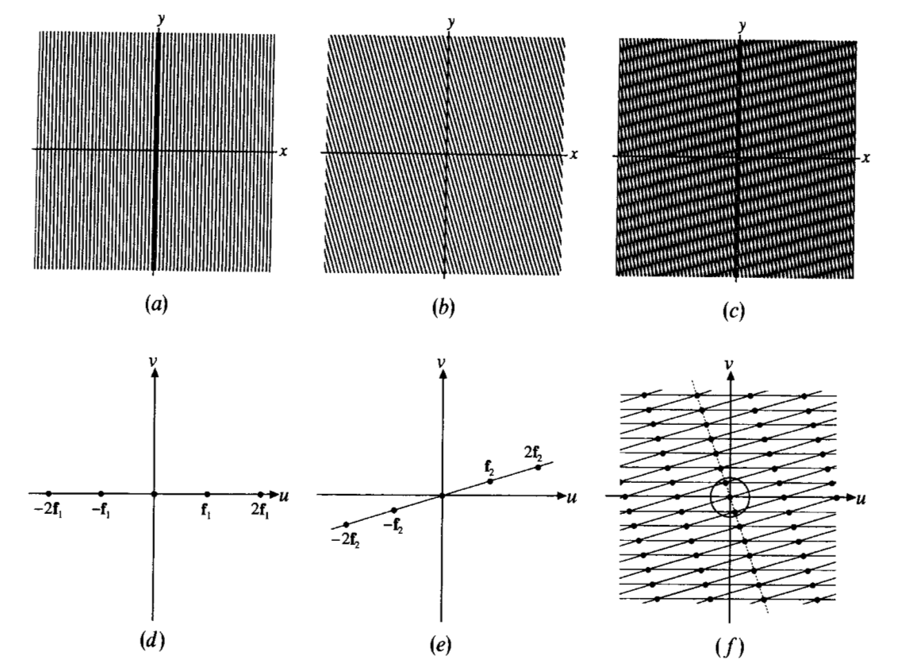

A Differentiable Anti-Anti-Aliasing Adventure
Using PyTorch to produce magical moiré patterns
Thursday, July 16, 2020 · 5 min read
Another magic trick. Watch these two grids overlap to reveal a secret image! Can you spot the phantom horse?
If my janky CSS animation didn’t work for you, here is another way to see it: simply shrink the top grid slowly until the horse “pops” out. It’s hard to show this effect consistently across displays/browsers because of varying pixel spacings and various browsers’ aggressive anti-aliasing tactics, but here is a screen recording I captured.
Magic trick? Not quite. Graphics folks will immediately recognize this effect as a curious instance of the dreaded moiré pattern, caused by the interference between two almost-but-not-quite-the-same grids. Researchers work really hard to escape such “glitchy” artifacts — they are often a result of sloppily sampling a texture in a grid, leading to jagged edges or moiré streaks (image below from Wikipedia).
In fact, a lot of effort has gone into finding “good” sampling patterns that avoid moirés; for example, in an odd crossover of sampling theory and anatomy, if you look at the distribution of photoreceptors in a monkey’s retina they are neither in a grid nor uniformly random, but rather arranged in a low-discrepancy pattern to avoid exactly this kind of artifact.
But for all the hard work gone into avoiding these patterns, you kind of have to admit that they are beautiful and mysterious. In fact “moiré” gets its name from a desirable form of silk weave that exhibits this phenomenon owing to interference from the weave (photo from Wikipedia again). Similarly, this sculpture (and a lot more art) exploits moiré patterns for their hypnotic beauty.
There are lots of real-world ways you can play with this effect, and indeed soon enough you can’t stop seeing it everywhere you go (this is the joy and frustration of being interested in visual phenomena):
- Point a camera at a checkered shirt; the camera’s pixel grid interferes with the fabric pattern (I’ve been told not to wear checkered shirts when giving talks at certain venues where everything is recorded).
- Align two kitchen strainers and gently bend them to see the patterns change.
- Watch a screen door’s shadow interfere with the screen itself, poke the screen a bit to see the patterns change.
- Watch the wire fences on either side of a pedestrian walkway above a road interfere with each other.
- Look at an office chair from behind, watch the mesh of the back interfere with the mesh of the seat. Depending on their relative curvature you can get some beautiful effects.
These patterns are seemingly random, like marbled paper. But can we control this randomness? Satisfyingly, an on-demand moiré such as the effect above is extremely simple to generate using differentiable programming in PyTorch.
What I am optimizing is a small distortion to the image of the grid such that when the grid and its distortion are superimposed, the resulting image has low L2 difference from a given target, such as the horse image. What exactly is this “distortion”? Imagine the image printed on play-dough and deforming it by stretching and squeezing parts. The result is a warping of the image. To express this warping, each pixel is assigned a “motion vector” which tells it where to go. To make sure the motion vectors are smooth and continuous between adjacent pixels, I actually learn a heavily downsampled set of motion vectors (even a 12-by-12 array gets good results) and then upsample it to full resolution with bicubic interpolation.
Here is the wonderful thing: all of these operations are built in to PyTorch and differentiable, apparently to support Spatial Transformer Networks. So, a straightforward 30-line implementation of the above algorithm is all it takes to start “learning” a moiré grid perturbation. Here is a Jupyter notebook with all you need to get started.
How much computation does it take to get good results? See this animation: it converges extremely rapidly, in just 800 iterations or so of plain gradient descent (a couple of minutes on my laptop).
I’m of course not the first person to try this trick; I found references in 2001 and 2013. I think my results look significantly better than those presented in the paper Variational Approach to Moire Pattern Synthesis (Lebanon and Bruckstein 2001), even though my technique is much simpler than their gradient-based technique. On the other hand, I think the more mathematically-motivated results presented in Target-Driven Moiré Pattern Synthesis by Phase Modulation (Tsai & Chuang 2013) are much more impressive, even though they have a slightly different setup than mine. They also had the resources to print out their patterns on transparent film and overlay them physically, as well as to mess with a camera whose Bayer pattern was known! And they suggest using this trick for cryptography. Very neat.
To understand what they do we need to understand the mechanics of moiré (instead of leaving it all to SGD!). I’ve always been told that when two high-frequency signals such as grids are superimposed, they can alias to form interesting low-frequeny content (famously there is this comic). But I’ve never been given more detail than that high-level overview, so I looked it up myself. It’s actually quite wonderful and principled. Here is my understanding as informed by A Generalized Fourier-based Method for the Analysis of 2D Moiré Envelope-forms in Screen Superpositions (Amidror 1994), specifically by Figure 4 reproduced below.

First, we need to come up with a useful characterization of grids. Recall that you can take a 2D signal (i.e. image) and perform a 2D Fourier transform, which is also an image. Each point in frequency-space represents a set of stripes (i.e. a sine wave) rotated to match the point’s angle with respect to the origin (see (a) and (b) in the figure for examples of what I mean). The frequency of the stripes is given by the distance from the point to the origin, and the amplitude is given by the point’s brightness (complex-valued brightnesses let you set phase). To get “sharp” stripes instead of a “smooth” sine wave gradient, you have to add “harmonics” at regular multiples of that point (recall the Fourier transform of a square wave if that helps). This is (d) and (e) in the figure from the paper.
Next, we note that superimposing two sets of stripes is like pointwise multiplication (if you treat zeros as “occlusion”, then multiplying by zero always sends the result to zero as desired). Because pointwise multiplication is convolution in frequency space, the superposition looks like a lattice spanned by the harmonics in frequency space. This lattice is depicted in (f) in the figure.
The key to the illusion is that this lattice might include points much closer to the origin than either of the harmonics that span it! Because the human visual perceptual system acts as a low-pass filter, the result is that you see a low-frequency “phantom” in the superposition. This is visible in (c) in the figure.
Tsai and Chuang use this exact insight to reverse the moiré effect analytically, with excellent results.
Open questions: I think there’s a lot more to do here. In my mind, the holy grail is a T-shirt you can wear which, only when photographed reveals a secret message. Another neat application would be a wire mesh rolled into a cylinder such that as you rotated it, the moiré patterns animated into something cool (perhaps a galloping horse, as a nod to Muybridge). There is some precedent for this in “barrier-grid” animation (see, e.g. these vinyl record covers), but the benefit of a moiré-based approach would be that the barriers need not be as thick, allowing for finer detail.
Another direction to go in is audio moiré; that is, could we make two sounds, both above human aural range (20 kHz) such that when played together you hear a perfectly clear, audible voice?
As you might have guessed, I think naïve gradient descent should be able to get us a long way there…